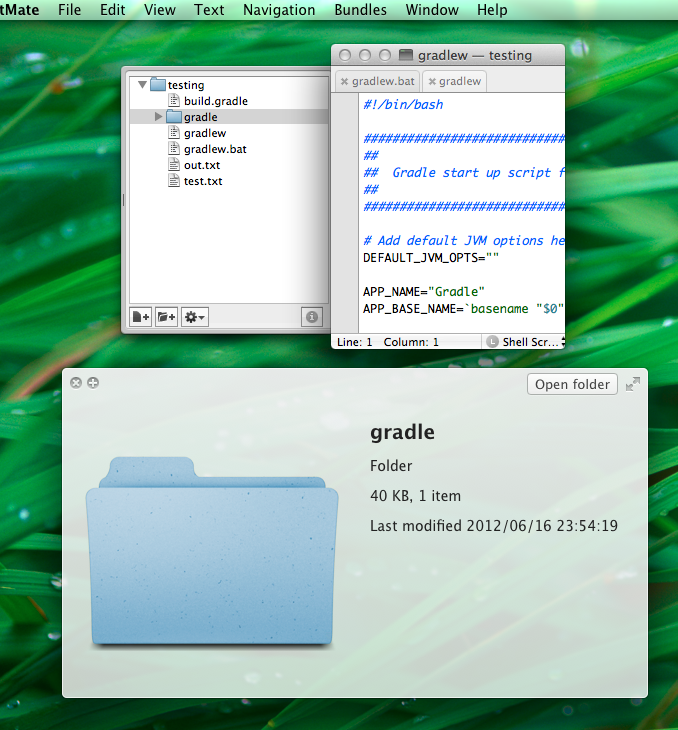

TextMateのOutline View でQuickLookが効くようにする
概要
この部分でQuickLookが効くと何かとうれしい。
けいくんが何か知らないがSublimeText2でやりたいと言ってたので
そういえばTextMateとSublimeはプラグイン互換性有るなーと思って探してみたら
あった。
結局Sublimeで動くかどうかは試してない。
動くんじゃねーの。
DL
project一式
https://github.com/belkadan/textmate-quicklook
TextMate Bundle
https://github.com/downloads/belkadan/textmate-quicklook/TMQuickLook.tmplugin.zip
実行すると

Outlone Viewで項目に対してSpace。
おまけ
ココから下は寝落ちしてる間にねこが書きました
xっっっっっっっっっっっっっっっっっっっっっっっっっっっっっっっっっっっっっっっっっっっっっっっっっっっっっっっっっっっっっっっっっっっっっっっっっっっっっっっっっっっっっっっっっっっっっっっっっっっっっっっっっっっっっっっっっっっっっっっっっっっっっっっっっっっっっっっっっds